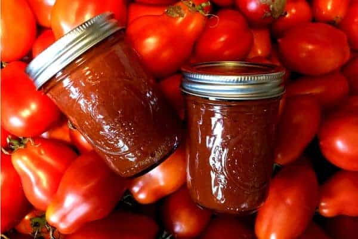
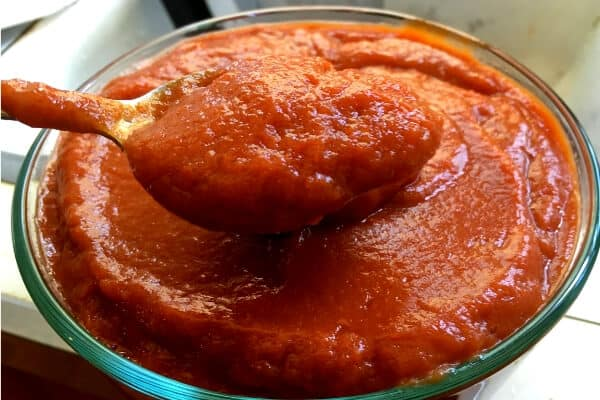

What is Ketchup?
Ketchup is a tangy, sweet sauce made from tomatoes, vinegar, sugar, and various spices. It's a staple condiment for many dishes, especially burgers and fries.
Ingredients:

- 1 can (6 ounces) tomato paste
- 1/4 cup apple cider vinegar
- 1/4 cup honey or maple syrup
- 1/2 teaspoon onion powder
- 1/2 teaspoon garlic powder
- 1/4 teaspoon salt
- 1/4 teaspoon black pepper
- 1/4 teaspoon smoked paprika (optional)
Instructions:

- In a medium bowl, whisk together the tomato paste, apple cider vinegar, honey (or maple syrup), onion powder, garlic powder, salt, black pepper, and smoked paprika (if using) until smooth.
- Adjust the seasoning to taste. If you prefer a sweeter ketchup, add more honey or maple syrup. For a tangier flavor, add more vinegar.
- Transfer the ketchup to a clean jar or bottle and refrigerate for at least 1 hour before using to allow the flavors to meld together.
- Enjoy your homemade ketchup on burgers, fries, or as a dipping sauce!
Tips for the Best Homemade Ketchup
- Use high-quality tomato paste for a richer flavor.
- Feel free to experiment with additional spices like cinnamon, cloves, or cayenne pepper for a unique twist.
- Store the ketchup in an airtight container in the refrigerator for up to 2 weeks.